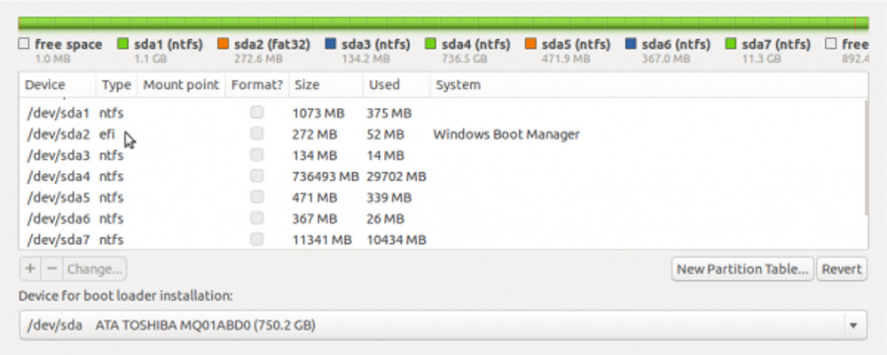

Desmistificando alguns conceitos
Guia completo para iniciantes sobre discos e partições no Linux
Manipulação de discos ou partições são muito comuns, principalmente quando decide-se ter mais de um sistema instalado na máquina ou criar “espaço reservado” para determinados arquivos.
Contudo, alguns detalhes técnicos acabam por confundir muitos usuários que deixam de realizar algumas tarefas desse tipo, por conta disso.
Sendo assim, resolvi escrever um artigo que “deixasse de lado” termos, altamente, técnicos, associados a este assunto, e que oferecesse uma leitura mais simples e descomplicada :)
Antes de começar…
Primeiramente, saiba que toda operação com partições de discos é perigosa, pois há o risco de perda ou corrompimento dos dados. Tenha sempre um backup (cópia de segurança) de seus arquivos. Ou, prefira realizar testes dessa natureza em ambientes isolados ou que não afetem dados críticos do seu cotidiano. Por exemplo, sugiro o uso de máquinas virtuais para esse cenário :)
Diante disso, apresento alguns conceitos importantes para uma boa compreensão:
Discos e partições no Linux
1. NOMENCLATURA DOS DISCOS
Diferentemente de sistemas Windows, não existe nenhuma unidade C ou D no Linux. Uma referência a um disco rígido no Linux, normalmente, você verá algo como arquivos /dev/sda, /dev/sdb, /dev/sdc, etc.

O nome e pasta “dev” é a tradução de dispositivo e, neste caso, representa um dispositivo de armazenamento em bloco. O prefixo “sd”, do arquivo contido na pasta “dev”, é a tradução para o driver de armazenamento em massa SCSI (Small Computer System Interface). Os discos SCSI são unidades que podem ser HDs (pendrives), unidades de CD-RW e gravadoras de DVD. E a ‘letra’, sufixo de ‘sd’, indica o número do disco (sda).
De acordo com a imagem acima, é mostrado como os discos rígidos são representados no Windows e num sistema Linux. O Windows, no caso, vê um disco na unidade C: e outro na unidade D: . Já no caso do Linux, ele assume uma abordagem diferente. O primeiro disco rígido detectado por um sistema Linux possui o rótulo sda . Em termos numéricos, é o disco rígido 0 (zero, a contagem começa de 0, não 1). O segundo disco rígido é sdb, e uma possível terceira unidade, sdc, e assim por diante.
2. PARTIÇÕES
Para instalar um sistema operacional em um disco rígido, ele deve primeiro ser subdividido em unidades de armazenamento distintas. Em outras palavras, um disco precisa ser particionado (ter partições). Analogamente, a uma pizza com respectivos pedaços :)
As partições são divisões lógicas existentes no disco rígido, indicando onde começa e onde termina uma região do disco. Um disco rígido (HD) pode ser dividido em várias partições, e cada partição será tratada com se fosse um dispositivo à parte.
Dessa forma, podemos instalar mais de um sistema operacional num mesmo HD, bem como salvar arquivos em uma partição separada, de modo a não perder os dados numa eventual corrupção do sistema. Uma partição de disco não interfere em outras partições existentes, por este motivo é possível usar o Windows, Linux e qualquer outro sistema operacional no mesmo disco. Mas, quando se apaga uma partição, você estará apagando TODOS os arquivos existentes nela!

Se você observar a imagem, você verá que, ao contrário dos discos rígidos, os números de partição começam de 1, não 0 (zero). Ou seja, se tivermos 2 partições, elas serão representadas por sda1 e sda2 :)
Em relação aos tipos, as partições subdividas em Primárias, Estendidas e Lógicas .
- Primárias: partições que contém um sistema de arquivos. Normalmente, partições de sistemas operacionais.
- Estendidas: partições primárias especiais, que ao invés de receber um sistema de arquivos “abrigam” outras partições lógicas.
- Lógicas: são as partições criadas dentro das partições estendidas. Essas partições, assim como as primárias, recebem sistemas de arquivos.

Na imagem acima, vemos o uso de partições primárias, estendidas e lógicas. Ao marcar uma partição como uma partição estendida, é possível criar muitas mais partições debaixo dela. Essas partições são chamadas de partições lógicas .
Ainda na imagem anterior, você pode ver que existem 3 partições primárias - sda1, sda2 e sda3. A quarta partição é uma partição estendida, que permite criar mais partições lógicas - sda6 e sda7 :)
Contudo, conforme a tabela de partições de cada disco, características importantes das partições podem mudar :)
3. TABELA DE PARTIÇÕES
Uma tabela de partição descreve o “layout” (aparência) das partições de um disco rígido .
Atualmente, existem 2 padrões de tabela de partição de disco: MBR (Master Boot Record) e GPT (GUID Partition Table) . MBR também conhecido como rótulo msdos, pela maioria dos formatadores de disco (fdisk, gparted e outros), por conta do formato MBR ter sido introduzido junto com o IBM PC DOS 2.0, em março de 1983. MBR é o padrão mais comum e antigo - suportado pela BIOS.
Já o GPT veio depois - suportado pela interface UEFI, presente computadores modernos.
O esquema de particionamento MBR é o que você encontrará em computadores mais antigos. Computadores mais recentes suportam ambos os esquemas (MBR e GPT), por isso ainda é possível usar um esquema de partição MBR nesses computadores. As principais limitações do MBR levaram ao desenvolvimento da GPT . Essas limitações são:
- Não permite a configuração de mais de 4 partições primárias (GPT suporta até 128 partições primárias)
- As partições de disco (cada fatia da pizza) são limitadas a 2 TB, ou seja, um disco com capacidade superior não será compreendido com sua capacidade máxima (GPT suporta partições acima dos 2 TB e um máximo de 1 ZB a depender do sistema de arquivos usado)
- Computadores mais recentes vêm com um firmware de substituição para o antigo sistema BIOS chamado UEFI (interface Unified Extensible Firmware), e o GPT faz parte do padrão UEFI. Se você comprou um computador com Windows 7/8 recentemente, é garantido que ele está instalado em um esquema de particionamento GPT.

A figura acima mostra o resultado do comando “sudo fdisk -l”, a partir de uma distribuição Ubuntu Linux . O ' Disklabel Type' confirma que o GPT está em uso. Caso fosse o esquema de partição de disco fosse o MBR, o ' Disklabel Type' seria representado por dos :)
No esquema de particionamento GPT, como dito anteriormente, “supera” duas limitações do esquema MBR - máximo de quatro partições primárias e o limite de 2 TB para os tamanhos de partição. A imagem abaixo mostra um disco sob o esquema de particionamento GPT:

Como visto existem 7 partições, todas primárias. Assim, o conceito de partições estendidas e lógicas é “irrelevante” ao GPT :)
4. SISTEMA DE ARQUIVOS
Antes que uma partição de disco possa ser usada para armazenar dados, primeiro ela deve ser formatada . O processo de formatação inclui “carimbá-lo” com um sistema de arquivos .
SAIBA MAIS
Um sistema de arquivos é um conjunto de estruturas lógicas e de rotinas, que permitem ao sistema operacional controlar o acesso ao disco rígido. Diferentes sistemas operacionais usam diferentes sistemas de arquivos. Conforme cresce a capacidade dos discos e aumenta o volume de arquivos e acessos, esta tarefa torna-se mais e mais complicada, exigindo o uso de sistemas de arquivos cada vez mais complexos e robustos – via Hardware.com.br
O sistema de arquivos no Windows é NTFS (New Technology File System). Já no Linux, existem mais de um sistema de arquivos disponível . Na verdade, existem pelo menos duas dúzias :)
A imagem abaixo mostra, como opção para instalação, o sistema de arquivo Ext4, que é uma versão aprimorada do Ext3, é o padrão mais usado em lançamentos recentes das distribuições Linux:

O BtrFS é o “mais novo” sistema de arquivos Linux. Ele vem com muitos recursos que não estão disponíveis em outros sistemas de arquivos Linux, como gerenciamento de volume e reconhecimento de RAID - acrônimo para Redundant Array of Disclaimer Disks - que é um método de combinação de dois ou mais discos rígidos em uma única unidade lógica.
Ele é visto como o sistema de arquivos da próxima geração para usuários de Linux, pois já está presente como opção, para instalação, na maioria das distribuições Linux existentes. Por exemplo, o openSUSE traz o Btrfs como opção padrão.

A imagem acima mostra o tipo de partição swap . É uma pequena seção de disco rígido sem formatação que o Linux e outros sistemas operacionais usam como memória virtual . A grosso modo, é um método para aumentar a quantidade de RAM total (RAM física física + memória virtual).
SAIBA MAIS
A memória virtual é um recurso que utiliza o disco rígido para armazenar dados não utilizados na memória RAM, liberando-a para receber mais dados. Isso torna o sistema mais estável e evita que ele se torne excessivamente lento quando muitas aplicações são executadas simultaneamente.
5. PONTO DE MONTAGEM
No Linux, para acessar um dispositivo de disco é necessário antes “montá-lo” em um diretório do sistema . O processo de montagem consiste em tornar o dispositivo acessível para o usuário. Em outras palavras, é preciso informar em qual diretório do sistema determinada partição será “configurada” :)
Atribuir um ponto de montagem a uma partição é uma das coisas que vem com a formatação, além de incluir um sistema de arquivos. No Linux, uma partição pode ser montada em um dos vários pontos de montagem tradicionais. Em um sistema Linux, os pontos de montagem mais usados são /, /boot, /home e swap. ‘/’ é o equivalente Linux da unidade Windows :C .

MAIS INFORMAÇÕES